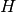
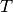
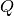

statsmodels.tsa.statespace.kalman_filter.FilterResults¶
-
class
statsmodels.tsa.statespace.kalman_filter.FilterResults(model)[source]¶ Results from applying the Kalman filter to a state space model.
Parameters: model : Representation
A Statespace representation
Attributes
nobs (int) Number of observations. k_endog (int) The dimension of the observation series. k_states (int) The dimension of the unobserved state process. k_posdef (int) The dimension of a guaranteed positive definite covariance matrix describing the shocks in the measurement equation. dtype (dtype) Datatype of representation matrices prefix (str) BLAS prefix of representation matrices shapes (dictionary of name,tuple) A dictionary recording the shapes of each of the representation matrices as tuples. endog (array) The observation vector. design (array) The design matrix,  .
.obs_intercept (array) The intercept for the observation equation,  .
.obs_cov (array) The covariance matrix for the observation equation . transition (array) The transition matrix, . state_intercept (array) The intercept for the transition equation,  .
.selection (array) The selection matrix,  .
.state_cov (array) The covariance matrix for the state equation . missing (array of bool) An array of the same size as endog, filled with boolean values that are True if the corresponding entry in endog is NaN and False otherwise. nmissing (array of int) An array of size nobs, where the ith entry is the number (between 0 and k_endog) of NaNs in the ith row of the endog array. time_invariant (bool) Whether or not the representation matrices are time-invariant initialization (str) Kalman filter initialization method. initial_state (array_like) The state vector used to initialize the Kalamn filter. initial_state_cov (array_like) The state covariance matrix used to initialize the Kalamn filter. filter_method (int) Bitmask representing the Kalman filtering method inversion_method (int) Bitmask representing the method used to invert the forecast error covariance matrix. stability_method (int) Bitmask representing the methods used to promote numerical stability in the Kalman filter recursions. conserve_memory (int) Bitmask representing the selected memory conservation method. tolerance (float) The tolerance at which the Kalman filter determines convergence to steady-state. loglikelihood_burn (int) The number of initial periods during which the loglikelihood is not recorded. converged (bool) Whether or not the Kalman filter converged. period_converged (int) The time period in which the Kalman filter converged. filtered_state (array) The filtered state vector at each time period. filtered_state_cov (array) The filtered state covariance matrix at each time period. predicted_state (array) The predicted state vector at each time period. predicted_state_cov (array) The predicted state covariance matrix at each time period. forecasts (array) The one-step-ahead forecasts of observations at each time period. forecasts_error (array) The forecast errors at each time period. forecasts_error_cov (array) The forecast error covariance matrices at each time period. llf_obs (array) The loglikelihood values at each time period. Methods
predict([start, end, dynamic])In-sample and out-of-sample prediction for state space models generally update_filter(kalman_filter)Update the filter results update_representation(model[, only_options])Update the results to match a given model Methods
predict([start, end, dynamic])In-sample and out-of-sample prediction for state space models generally update_filter(kalman_filter)Update the filter results update_representation(model[, only_options])Update the results to match a given model Attributes
kalman_gainKalman gain matrices standardized_forecasts_errorStandardized forecast errors